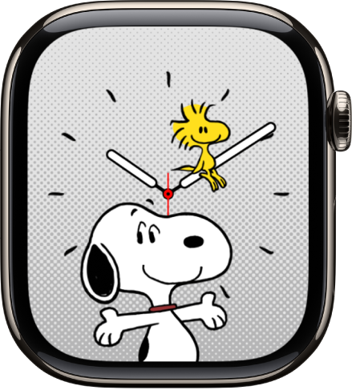

此表盘的主角是 Peanuts 漫画中闻名世界的比格犬史努比，展现了这只小狗顽皮有趣的性格。史努比会与 Woodstock 和手表指针欢乐互动。选取“周日惊喜”颜色设置，每周日，表盘背景会在多种颜色间循环变换，向周日版漫画致敬。
下方的文件数包括本地化资源。固件名称键能确认包的归属；组件的圆屏点击边界、亮屏过渡与 AOD 对照均待设备验证。
原始包 已解析属性表 Mach-O 方法与成员 ARM64 汇编 解出的图集
.png × 11489 .strings × 176 .plist × 164 .car × 1 无扩展名 × 1
原始包 已解析属性表 Mach-O 方法与成员 ARM64 汇编 解出的图集
.png × 11489 .strings × 176 .plist × 164 .car × 1 无扩展名 × 1
原始包 已解析属性表 Mach-O 方法与成员 ARM64 汇编 解出的图集
.png × 11489 .strings × 176 .plist × 164 .car × 1 无扩展名 × 1
NTKEsterbrookFaceBundle.bundleVO_DESCRIPTION_esterbrook_time_04VO_DESCRIPTION_esterbrook_generic_05VO_DESCRIPTION_esterbrook_time_05VO_DESCRIPTION_esterbrook_routine_evening_05VO_DESCRIPTION_esterbrook_time_10VO_DESCRIPTION_esterbrook_time_06VO_DESCRIPTION_esterbrook_time_11VO_DESCRIPTION_esterbrook_time_07VO_DESCRIPTION_esterbrook_school_work_01VO_DESCRIPTION_esterbrook_time_12VO_DESCRIPTION_esterbrook_time_08VO_DESCRIPTION_esterbrook_routine_evening_02VO_DESCRIPTION_esterbrook_calendar_christmas_02VO_DESCRIPTION_esterbrook_time_13VO_DESCRIPTION_esterbrook_time_09VO_DESCRIPTION_esterbrook_generic_10VO_DESCRIPTION_esterbrook_time_14VO_DESCRIPTION_esterbrook_school_work_02VO_DESCRIPTION_esterbrook_time_15VO_DESCRIPTION_esterbrook_generic_06VO_DESCRIPTION_esterbrook_school_work_03VO_DESCRIPTION_esterbrook_time_16VO_DESCRIPTION_esterbrook_time_20VO_DESCRIPTION_esterbrook_time_17VO_DESCRIPTION_esterbrook_time_21VO_DESCRIPTION_esterbrook_school_work_04VO_DESCRIPTION_esterbrook_time_22VO_DESCRIPTION_esterbrook_routine_morning_02VO_DESCRIPTION_esterbrook_time_18VO_DESCRIPTION_esterbrook_time_23VO_DESCRIPTION_esterbrook_music_01VO_DESCRIPTION_esterbrook_generic_07VO_DESCRIPTION_esterbrook_time_24VO_DESCRIPTION_esterbrook_generic_11VO_DESCRIPTION_esterbrook_time_19VO_DESCRIPTION_esterbrook_time_25VO_DESCRIPTION_esterbrook_music_02VO_DESCRIPTION_esterbrook_school_work_05VO_DESCRIPTION_esterbrook_time_26VO_DESCRIPTION_esterbrook_time_30VO_DESCRIPTION_esterbrook_music_03VO_DESCRIPTION_esterbrook_time_27VO_DESCRIPTION_esterbrook_time_31VO_DESCRIPTION_esterbrook_calendar_christmas_04VO_DESCRIPTION_esterbrook_time_28VO_DESCRIPTION_esterbrook_time_32VO_DESCRIPTION_esterbrook_routine_morning_05VO_DESCRIPTION_esterbrook_time_29VO_DESCRIPTION_esterbrook_time_33VO_DESCRIPTION_esterbrook_generic_08VO_DESCRIPTION_esterbrook_time_34VO_DESCRIPTION_esterbrook_generic_12VO_DESCRIPTION_esterbrook_health_workout_02VO_DESCRIPTION_esterbrook_time_35VO_DESCRIPTION_esterbrook_calendar_birthday_03VO_DESCRIPTION_esterbrook_weather_rainy_03VO_DESCRIPTION_esterbrook_time_36VO_DESCRIPTION_esterbrook_time_40VO_DESCRIPTION_esterbrook_weather_rainy_04VO_DESCRIPTION_esterbrook_time_37VO_DESCRIPTION_esterbrook_time_41VO_DESCRIPTION_esterbrook_health_workout_03VO_DESCRIPTION_esterbrook_time_38VO_DESCRIPTION_esterbrook_time_42VO_DESCRIPTION_esterbrook_weather_stormy_01VO_DESCRIPTION_esterbrook_time_39VO_DESCRIPTION_esterbrook_generic_09VO_DESCRIPTION_esterbrook_generic_13VO_DESCRIPTION_esterbrook_time_43VO_DESCRIPTION_esterbrook_time_44VO_DESCRIPTION_esterbrook_keep_alive_01VO_DESCRIPTION_esterbrook_time_45VO_DESCRIPTION_esterbrook_time_46VO_DESCRIPTION_esterbrook_time_50VO_DESCRIPTION_esterbrook_time_47VO_DESCRIPTION_esterbrook_keep_alive_03VO_DESCRIPTION_esterbrook_calendar_newyear_01VO_DESCRIPTION_esterbrook_time_48VO_DESCRIPTION_esterbrook_time_51VO_DESCRIPTION_esterbrook_generic_14VO_DESCRIPTION_esterbrook_calendar_thanksgiving_02VO_DESCRIPTION_esterbrook_time_49VO_DESCRIPTION_esterbrook_keep_alive_05VO_DESCRIPTION_esterbrook_time_52VO_DESCRIPTION_esterbrook_time_53VO_DESCRIPTION_esterbrook_time_54VO_DESCRIPTION_esterbrook_time_55VO_DESCRIPTION_esterbrook_weather_windy_01VO_DESCRIPTION_esterbrook_routine_evening_03VO_DESCRIPTION_esterbrook_time_56VO_DESCRIPTION_esterbrook_time_57VO_DESCRIPTION_esterbrook_time_58VO_DESCRIPTION_esterbrook_generic_15VO_DESCRIPTION_esterbrook_time_59VO_DESCRIPTION_esterbrook_weather_sunny_01VO_DESCRIPTION_esterbrook_weather_stormy_02VO_DESCRIPTION_esterbrook_calendar_halloween_01VO_DESCRIPTION_esterbrook_weather_windy_02VO_DESCRIPTION_esterbrook_routine_morning_03VO_DESCRIPTION_esterbrook_generic_20VO_DESCRIPTION_esterbrook_generic_16VO_DESCRIPTION_esterbrook_weather_sunny_02VO_DESCRIPTION_esterbrook_calendar_birthday_04VO_DESCRIPTION_esterbrook_calendar_christmas_01VO_DESCRIPTION_esterbrook_calendar_valentines_01VO_DESCRIPTION_esterbrook_weather_windy_03VO_DESCRIPTION_esterbrook_calendar_halloween_03VO_DESCRIPTION_esterbrook_generic_17VO_DESCRIPTION_esterbrook_weather_stormy_03VO_DESCRIPTION_esterbrook_weather_sunny_03VO_DESCRIPTION_esterbrook_generic_18VO_DESCRIPTION_esterbrook_calendar_christmas_03VO_DESCRIPTION_esterbrook_calendar_valentines_02VO_DESCRIPTION_esterbrook_calendar_birthday_01VO_DESCRIPTION_esterbrook_generic_19VO_DESCRIPTION_esterbrook_device_waterlock_01VO_DESCRIPTION_esterbrook_device_theater_01VO_DESCRIPTION_esterbrook_routine_evening_04VO_DESCRIPTION_esterbrook_time_01_aboveVO_DESCRIPTION_esterbrook_calendar_christmas_05VO_DESCRIPTION_esterbrook_calendar_valentines_03VO_DESCRIPTION_esterbrook_weather_icy_01VO_DESCRIPTION_esterbrook_generic_01VO_DESCRIPTION_esterbrook_routine_evening_01VO_DESCRIPTION_esterbrook_weather_snowy_01VO_DESCRIPTION_esterbrook_calendar_thanksgiving_03VO_DESCRIPTION_esterbrook_weather_icy_02VO_DESCRIPTION_esterbrook_routine_morning_04VO_DESCRIPTION_esterbrook_weather_icy_03VO_DESCRIPTION_esterbrook_calendar_birthday_05VO_DESCRIPTION_esterbrook_routine_morning_01VO_DESCRIPTION_esterbrook_generic_02VO_DESCRIPTION_esterbrook_keep_alive_02VO_DESCRIPTION_esterbrook_weather_snowy_02VO_DESCRIPTION_esterbrook_keep_alive_04VO_DESCRIPTION_esterbrook_generic_03VO_DESCRIPTION_esterbrook_device_lowpower_01VO_DESCRIPTION_esterbrook_weather_snowy_03VO_DESCRIPTION_esterbrook_focus_dnd_01VO_DESCRIPTION_esterbrook_health_workout_01FACE_STYLE_ESTERBROOK_DESCRIPTIONVO_DESCRIPTION_esterbrook_generic_04VO_DESCRIPTION_esterbrook_calendar_thanksgiving_01VO_DESCRIPTION_esterbrook_calendar_birthday_02VO_DESCRIPTION_esterbrook_time_00VO_DESCRIPTION_esterbrook_time_01_belowVO_DESCRIPTION_esterbrook_time_02VO_DESCRIPTION_esterbrook_calendar_halloween_02VO_DESCRIPTION_esterbrook_time_03VO_DESCRIPTION_esterbrook_weather_rainy_01FACE_GALLERY_ESTERBROOK_DESCRIPTIONcolor-12color-06sundaycolor-01color-07color-13color-02color-08color-03color-09color-10color-04color-05color-11ESTERBROOK_STYLE_EDIT_OPTION_NUMERALS_IIESTERBROOK_STYLE_EDIT_OPTION_TICKSESTERBROOK_STYLE_EDIT_OPTION_NUMERALS_IESTERBROOK_STYLE_EDIT_OPTION_NONEESTERBROOK_STYLE_EDIT_OPTION_NONE_COMPANIONESTERBROOK_STYLE_EDIT_OPTION_NUMERALS_I_COMPANIONESTERBROOK_STYLE_EDIT_OPTION_NUMERALS_II_COMPANIONESTERBROOK_STYLE_EDIT_OPTION_TICKS_COMPANION色组与设备条件 Esterbrook.color.plist 共享色组与默认值
-[NTKEsterbrookColorPalette tritiumFillColor];-[NTKEsterbrookColorPalette tritiumStrokeColor];-[NTKEsterbrookSceneTritiumSupport tritiumProgress];-[NTKEsterbrookSceneTritiumSupport setTritiumProgress:];+[NTKEsterbrookFace tritium_burnInFaceName];-[NTKEsterbrookFaceView tritium_didTransitionToTritiumOn];-[NTKEsterbrookFaceView tritium_prepareForTransitionToTritiumOnAnimated:withCompletion:];-[NTKEsterbrookFaceView tritium_didTransitionToTritiumOff];-[NTKEsterbrookFaceView tritium_transitionToTritiumOnWithProgress:];-[NTKEsterbrookFaceView tritium_createFaceAnimator];-[NTKEsterbrookFaceView tritium_alwaysOnTimelines];-[NTKEsterbrookFaceView debugTritiumAlpha];-[NTKEsterbrookFaceView setDebugTritiumAlpha:];-[NTKEsterbrookFaceView tritium_transitionToFrameSpecifier:];-[NTKEsterbrookFaceView tritium_transitionToTritiumOffWithProgress:];-[NTKEsterbrookFaceView debug_setTritiumProgress:];-[NTKEsterbrookFaceView tritium_timeViews];-[NTKEsterbrookFaceView tritium_willTransitionToTritiumOnToFrameSpecifier:];-[NTKEsterbrookFaceView tritium_willTransitionToTritiumOffFromFrameSpecifier:];-[NTKEsterbrookSceneBackgroundView tritiumProgress];-[NTKEsterbrookSceneBackgroundView setTritiumProgress:];-[NTKEsterbrookSceneCoordinator tritiumProgress];-[NTKEsterbrookSceneCoordinator setTritiumProgress:];-[NTKEsterbrookSceneCoordinator prepareForTransitionToTritiumOn];-[NTKEsterbrookSceneCoordinator didTransitionToTritiumOff];-[NTKEsterbrookSceneCoordinator didTransitionToTritiumOn];-[NTKEsterbrookSceneDialView tritiumProgress];-[NTKEsterbrookSceneDialView setTritiumProgress:];+[NTKEsterbrookScenePalette tritium];-[NTKEsterbrookSceneView tritiumProgress];-[NTKEsterbrookSceneView setTritiumProgress:];-[_TtC23NTKEsterbrookFaceBundleP33_D4B8177EC3DB85907ED10DF93FC2510719LowPowerModeMonitor powerStateDidChange];-[NTKEsterbrookColorPalette secondHand];-[NTKEsterbrookFaceView tritium_didTransitionToTritiumOn];-[NTKEsterbrookFaceView tritium_prepareForTransitionToTritiumOnAnimated:withCompletion:];-[NTKEsterbrookFaceView tritium_didTransitionToTritiumOff];-[NTKEsterbrookFaceView _applyTransitionFraction:fromOption:toOption:forCustomEditMode:slot:];-[NTKEsterbrookFaceView tritium_transitionToTritiumOnWithProgress:];-[NTKEsterbrookFaceView tritium_createFaceAnimator];-[NTKEsterbrookFaceView tritium_alwaysOnTimelines];-[NTKEsterbrookFaceView tritium_transitionToFrameSpecifier:];-[NTKEsterbrookFaceView tritium_transitionToTritiumOffWithProgress:];-[NTKEsterbrookFaceView screenWillTurnOnAnimated:];-[NTKEsterbrookFaceView setOverrideDate:duration:];-[NTKEsterbrookFaceView tritium_willTransitionToTritiumOnToFrameSpecifier:];-[NTKEsterbrookFaceView screenDidTurnOffAnimated:];-[NTKEsterbrookFaceView tritium_willTransitionToTritiumOffFromFrameSpecifier:];-[NTKEsterbrookSceneCoordinator screenWillTurnOnAnimated:];-[NTKEsterbrookSceneCoordinator setOverrideDate:duration:];-[NTKEsterbrookSceneCoordinator prepareForTransitionToTritiumOn];-[NTKEsterbrookSceneCoordinator didTransitionToTritiumOff];-[NTKEsterbrookSceneCoordinator didTransitionToTritiumOn];-[NTKEsterbrookSceneCoordinator screenDidTurnOffWithAnimated:];-[NTKEsterbrookSceneDialView applyDensityTransitionWithFraction:from:to:];+[NTKEsterbrookScenePalette interpolateWithStart:end:fraction:];-[NTKEsterbrookScenePalette secondHand];-[_TtC23NTKEsterbrookFaceBundle14SpriteAnimator init];-[_TtC23NTKEsterbrookFaceBundle14SpriteAnimator dealloc];-[_TtC23NTKEsterbrookFaceBundle14SpriteAnimator displayLinkFired];-[_TtC23NTKEsterbrookFaceBundle22NTKEsterbrookHandsView secondHandConfiguration];-[_TtC23NTKEsterbrookFaceBundle22NTKEsterbrookHandsView minuteHandConfiguration];-[NTKEsterbrookColorPalette background];-[NTKEsterbrookColorPalette overlay];-[NTKEsterbrookColorPalette tritiumFillColor];-[NTKEsterbrookColorPalette tritiumStrokeColor];-[NTKEsterbrookColorPalette secondHand];-[NTKEsterbrookColorPalette isSundayOption];-[NTKEsterbrookSceneCoordinatorDelegate didChangeScenePalette];-[NTKEsterbrookSceneCoordinatorDelegate didChangeScenePalette];-[NTKEsterbrookColorPalette swatch];-[NTKEsterbrookColorPalette init];-[NTKEsterbrookColorPalette isMulticolor];-[NTKEsterbrookColorPalette isSundayOption];-[NTKEsterbrookFace _numberOfOptionsForCustomEditMode:slot:];-[NTKEsterbrookFace _defaultOptionForCustomEditMode:slot:];-[NTKEsterbrookFace _indexOfOption:forCustomEditMode:slot:];-[NTKEsterbrookFace _optionAtIndex:forCustomEditMode:slot:];-[NTKEsterbrookFaceView _homeScreenBackgroundColor];-[NTKEsterbrookFaceView createFaceColorPalette];-[NTKEsterbrookFaceView _applyTransitionFraction:fromOption:toOption:forCustomEditMode:slot:];-[NTKEsterbrookFaceView layoutSubviews];-[NTKEsterbrookFaceView _applyBreathingFraction:forCustomEditMode:slot:];-[NTKEsterbrookFaceView _applyOption:forCustomEditMode:slot:];-[NTKEsterbrookFaceView debug_layoutSubviews];-[NTKEsterbrookFaceView didChangeScenePalette];-[NTKEsterbrookFaceView _applyPalette:];-[NTKEsterbrookFaceView esterbrookPalette];-[NTKEsterbrookFaceView _applyRubberBandingFraction:forCustomEditMode:slot:];-[NTKEsterbrookSceneCoordinator cleanupAfterEditing];-[NTKEsterbrookSceneCoordinator prepareForEditing];-[NTKEsterbrookSceneCoordinator setColorPalette:];-[NTKEsterbrookSceneCoordinator colorPalette];-[NTKEsterbrookSceneCoordinator initWithFrame:device:handsView:colorPalette:faceState:sourceConfiguration:];-[NTKEsterbrookSceneCoordinator layoutForDateChange];+[NTKEsterbrookScenePalette tritium];+[NTKEsterbrookScenePalette interpolateWithStart:end:fraction:];-[NTKEsterbrookScenePalette background];-[NTKEsterbrookScenePalette overlay];-[NTKEsterbrookScenePalette initWithColorPalette:];-[NTKEsterbrookScenePalette isEqual:];-[NTKEsterbrookScenePalette init];-[NTKEsterbrookScenePalette secondHand];-[NTKEsterbrookSceneView layoutSubviews];-[NTKEsterbrookSceneView initWithFrame:handsView:colorPalette:device:];-[NTKEsterbrookSceneView layoutForDateChange];-[NTKEsterbrookSceneView scenePalette];-[NTKEsterbrookSceneView setScenePalette:];-[_TtC23NTKEsterbrookFaceBundle10SpriteView layoutSubviews];